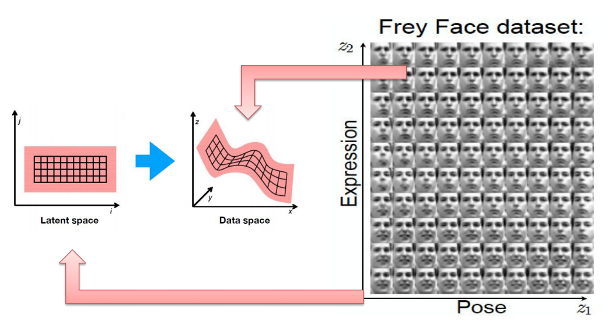
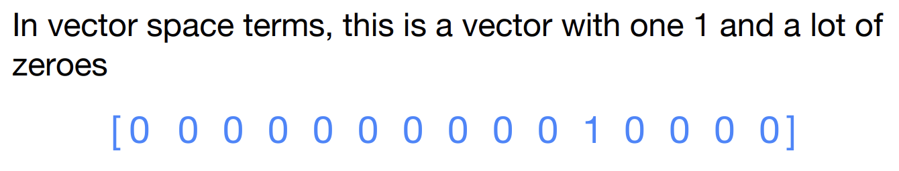
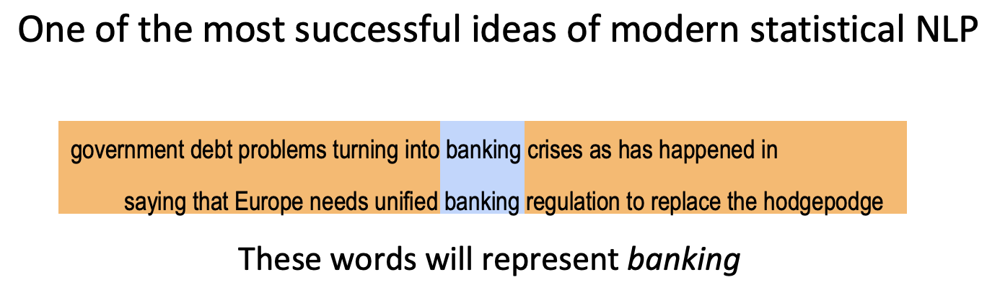
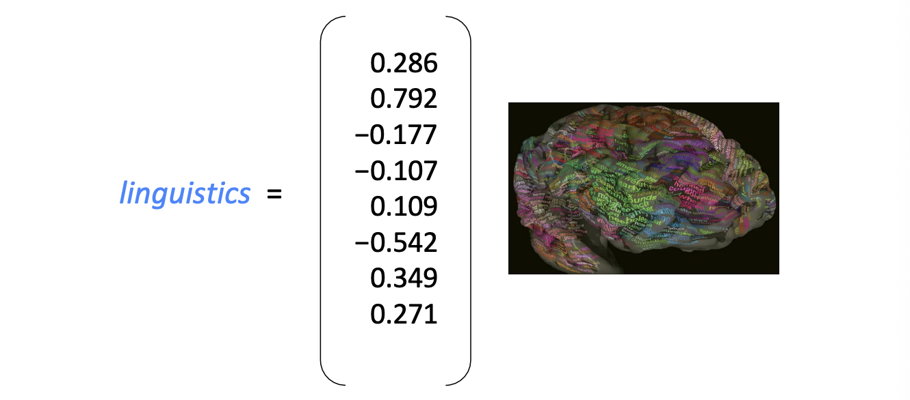
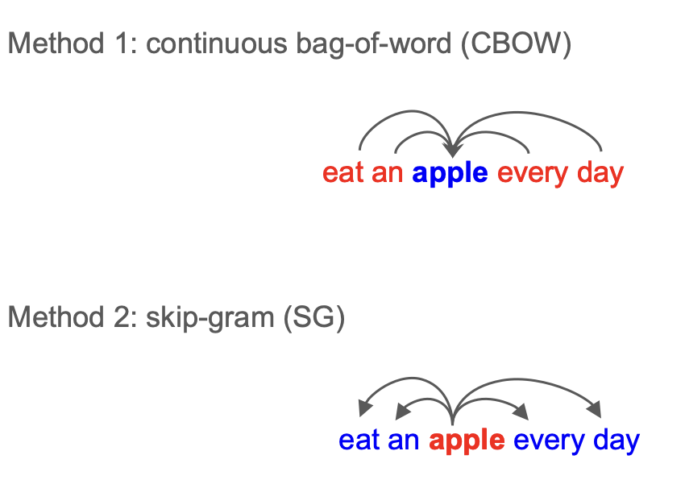
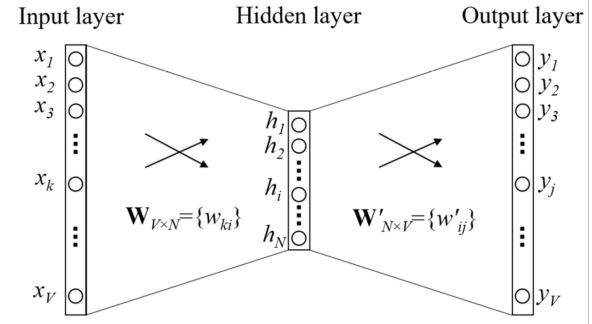
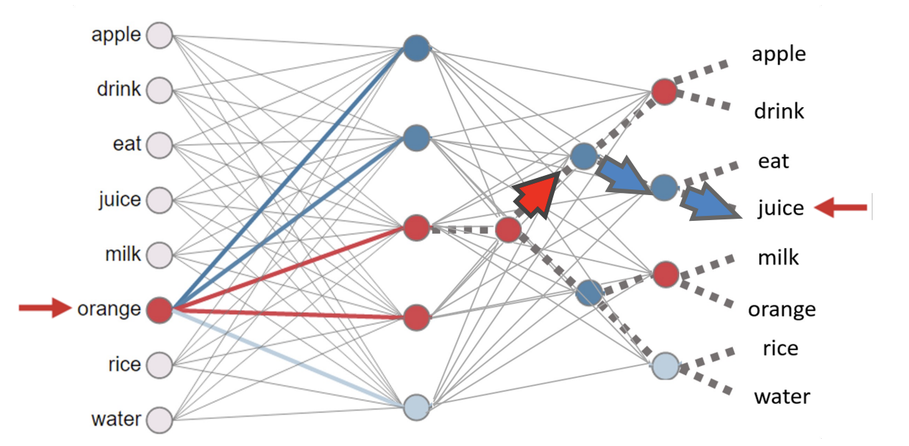
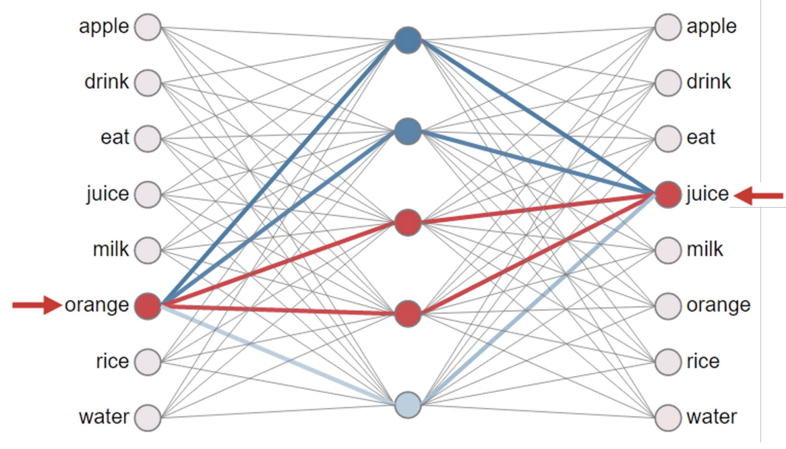
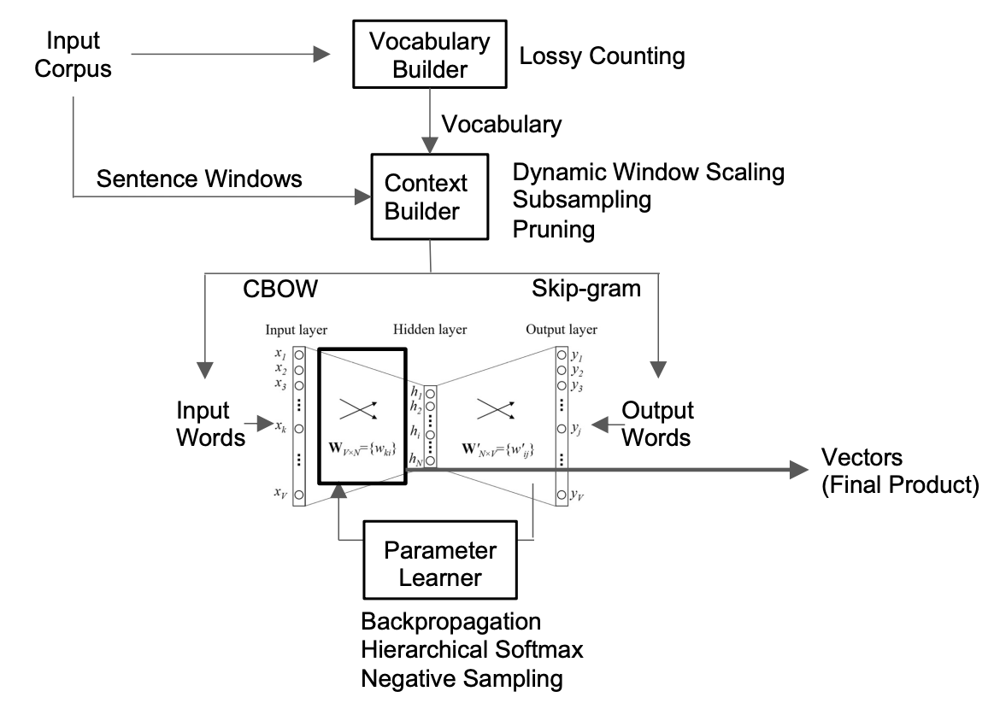
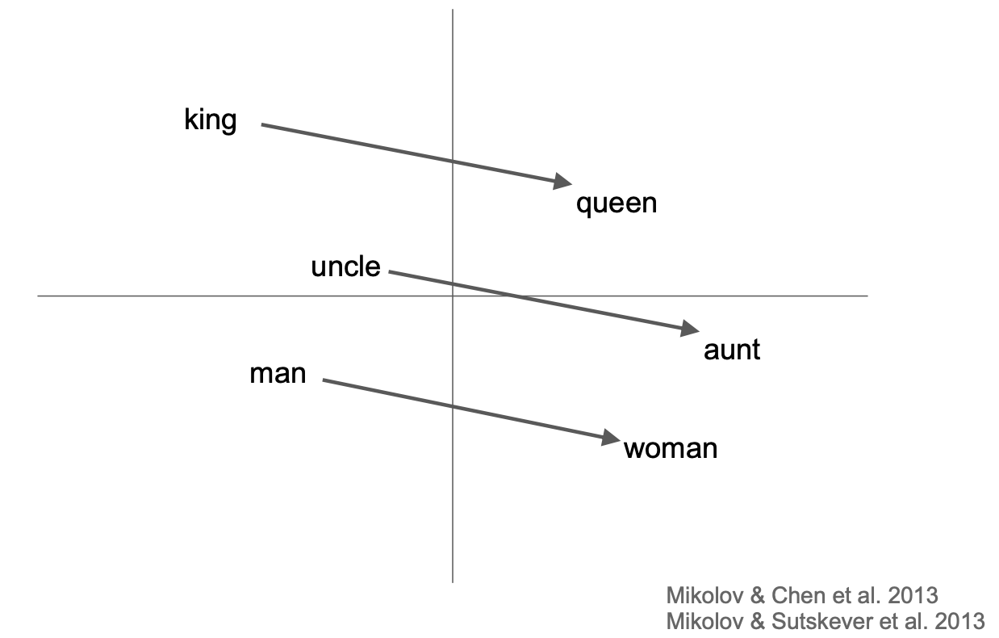

Word Embedding¶
1. Manifold Assumption¶
流形假设：现实世界中的高维数据，实际上分布在嵌入于该高维空间中的低维流形上

右侧是一堆人脸照片
- 假设每张脸是 \(20 \times 20\) 像素，那么每张脸就是一个 400维空间 里的一个点
- 假如在该维空间里随机选一个点，它看起来大概率是一个噪点而不是一个表情
- 虽然空间有 400 维，但脸的变化是有规律的：有的在改变表情，有的在改变姿态
左侧代表隐空间（Latent Space）
- 低维本质： 尽管原始数据有 400 维，但决定这张脸看起来什么样的核心因素其实只有几个（图示中简化为 2 个维度）
- 内在坐标： \(z_1\) 代表 pose，\(z_2\) 代表 expression；在这个低维空间里，数据点排列得非常整齐
机器学习的目标就是通过降维，把高维的像素点变回低维的参数
How do we represent the meaning of a word?
在人类看来，词义是符号（能指）与概念（所指）的结合。
但对于计算机，不能只给它“能指”（一串字符），我们需要找到一种方式，让它能捕捉到背后的“所指”（词与词之间的逻辑关系）
2. Discrete Representation¶
Taxonomy¶
此处介绍分类分级法（Taxonomy），以 WordNet 为例
- 上位词 (Hypernyms / "is-a" relationship)
- 查询 panda，WordNet 会返回熊猫的一系列“祖先”：
carnivore（食肉目）\(\to\) mammal（哺乳动物）\(\to\) animal（动物）\(\to\) entity（实体）
- 查询 panda，WordNet 会返回熊猫的一系列“祖先”：
- 同义词集 (Synonym sets / Synsets)
- WordNet 把意思相近的词打成一个包（Synset），计算机通过看一个词和哪些词位于同一个包，来分辨它的具体含义
语义层面的问题
- 缺乏细微差别 (Missing nuances)
- 新词需要不断补充，成本高
- 主观性
- 计算相似度难：离散系统中词和词只有“相同”和“不同”两种关系
One-hot¶
独热编码 (One-hot)：每个词被表示为一个极其巨大的向量，其中只有一个位置是 1，其余全是 0

数学层面的问题
- 原子符号 (Atomic symbols)：在这种表示法下，词被看作是互不相关的“原子”
- 正交性问题 (The Orthogonality Problem)：从数学上看，任何两个独热向量的点积都是 0
3. Distributed Representations¶
分布相似性表示（Distributional similarity based representations）
- You can get a lot of value by representing a word by means of its neighbors

计算机不再把 banking 看作一个孤立的字符串，而是用周围这些高频出现的词来“代表”它
Word Vector¶
Word meaning is defined in terms of vectors

- 稠密向量 (Dense Vector)：不同于独热编码，这里为每个词构建一个长度固定且每个位置都有具体数值的向量
- 预测能力： 这些数值的选择标准是：该向量必须能够很好地预测出现在它上下文中的其他词
- 递归性 (Recursive)：不仅用中心词向量去预测上下文词向量，而那些上下文词本身也是由向量表示的。它们在模型训练过程中相互影响、共同进化
Directly learning low-dimensional word vectors
Relevant for this lecture & deep learning:
- Learning representations by back-propagating errors (Rumelhart et al., 1986)
- A neural probabilistic language model (Bengio et al., 2003)
- NLP (almost) from Scratch (Collobert & Weston, 2008)
- A recent, even simpler and faster model: word2vec (Mikolov et al. 2013)
4. word2vec¶
How do we select input and output words?

word2vec model architecture¶
- 此处是 SG 模型

- 输入层 (Input Layer):
- 由 \(V\) 个节点组成，其中 \(V\) 代表词典的大小
- 输入是一个 One-hot 向量，即只有代表当前词的 \(x_k\) 位置为 1，其余全为 0
- 隐藏层 (Hidden Layer):
- 由 \(N\) 个节点组成（\(h_1\) 到 \(h_N\)），这个 \(N\) 就是我们想要生成的词向量维度（通常是 100-300 维）
- 关键点：隐层没有激活函数（线性映射），它仅仅是输入向量与权重矩阵 \(W\) 相乘后的结果
- 输出层 (Output Layer):
- 同样由 \(V\) 个节点组成，对应词典中的每一个词
- 输出结果 \(y_j\) 经过 Softmax 处理后，代表在给定输入词的情况下，词典中每个词作为其上下文出现的概率 。
两个权重矩阵
| 矩阵符号 | 维度 | 物理意义 |
|---|---|---|
| \(W_{V \times N}\) | \(V \times N\) | 输入词矩阵。每一行 \(w_{ki}\) 对应词典中第 \(k\) 个词作为“中心词”时的向量表示 |
| \(W'_{N \times V}\) | \(N \times V\) | 输出词矩阵。每一列 \(w'_{ij}\) 对应词典中第 \(j\) 个词作为“上下文词”时的向量表示 |
工作原理：
- 查找 (Lookup)： 当 One-hot 向量输入时，乘法操作等同于直接从矩阵 \(W\) 中提取第 \(k\) 行。这就是该词目前的向量表示 \(h\) 。
- 投影 (Projection)： 这个向量 \(h\) 再与矩阵 \(W'\) 相乘，计算它与词典中所有词的相似度（点积）。
- 误差反传 (Backprop)： 模型会比较预测的概率分布与实际上下文的分布，通过反向传播来更新 \(W\) 和 \(W'\) 中的数值
Softmax¶
对于向量中的每一个元素 \(z_i\)，其 Softmax 值的计算公式为：
- 归一化： 所有输出分量都在 \((0, 1)\) 之间
- 总和为 1： 所有输出分量的总和恒等于 1，输出可以被解释为该样本属于某一类别的概率
Training Generic Softmax is Intractable
当词典 \(V\) 达到几十万甚至上千万（如 Google 1T 语料库）时，Softmax 分母中的求和操作 \(\sum e^{z_j}\) 计算量巨大
Hierarchical Softmax¶

在 \(V\) 个词中选一个 \(\rightarrow\)树的二分类决策问题（关注 hidden layer 和 output layer）
- 树状路径： 将所有单词组织成一棵二叉树（通常是霍夫曼树）
- 如图所示，要预测 juice，模型不再遍历全表，而是从根节点开始，沿着特定路径（图中虚线）进行一系列二分类判断
- 计算量大减： 原本需要计算 \(V\) 次，现在只需计算 \(\log_2(V)\) 次
- 训练逻辑： 每一条路径上的内部节点都有自己的权重，模型通过调整这些权重来提高走到正确目标词的概率
Negative Sampling¶
目前更主流、更简单的做法：只更新“正确的那个”和“随机选的几个错误结果”

- 正样本（Positive Sample）：比如输入 orange，正确的目标词是 juice
- 模型必须更新这对组合，让它们的向量在空间里靠得更近
- 负样本（Negative Samples）：模型随机从词典中选出 5-20 个不相关的词作为负样本
- 局部更新： 每一轮训练模型只更新这几个选中的词向量
- 拉近引力： 强化 orange 与 juice 的联系
- 排斥斥力： 弱化 orange 与随机选出的那几个词的联系
- 核心优势： 大幅降低了计算开销，实验证明这种“局部微调”可以让模型学到非常高质量的全局流形结构
word2vec decomposed¶

- 预处理阶段 ：
- Vocabulary Builder：通过 Lossy Counting 等算法过滤掉出现频率极低的词，建立词典
- 数据采样阶段 ：
- Context Builder：通过滑动窗口截取上下文
- 优化策略：使用 Dynamic Window Scaling（动态调整窗口大小）和 Subsampling（降低高频停用词如 "the" 的采样频率）来提升效率
- 核心学习阶段 (Parameter Learner) ：
- 模型在 CBOW 或 Skip-gram 架构下运行
- 利用 Backpropagation 根据预测误差更新权重
- 使用 Hierarchical Softmax 或 Negative Sampling 来解决计算问题
- 最终产物 (Final Product) ：
- 训练结束后，产出的 Vectors 就是可以在流形空间中计算语义相似度的稠密向量
Word Analogy¶

语义关系可以转化为向量的加减运算
- 线性关系：图中展示了“性别”这一维度在不同词对之间表现出高度的一致性
- \(\text{King} - \text{Man} + \text{Woman} \approx \text{Queen}\)
- \(\text{Uncle} - \text{Man} + \text{Woman} \approx \text{Aunt}\)
- 平移不变性：连接“男性词”和“女性词”的向量在方向和长度上几乎是平行且相等的
- 这意味着模型不仅学到了单个词的意思，还学到了词与词之间复杂的逻辑关系
5. Applications of Word Vectors¶
- Word Similarity
- Machine Translation
- Part-of-Speech and Named Entity Recognition
- Relation Extraction
- Sentiment Analysis
- Co-reference Resolution
- Clustering
- Semantic Analysis of Documents
6. Limitations¶
Word Ambiguity¶
- 一个词一个向量： 在 Word2Vec 模型中，每个单词（如 "Apple"）被分配了一个唯一的、固定的向量
- 多义词困境： 如果 "Apple" 同时代表“水果”和“科技公司”，模型会将这两层语义强行压缩到同一个坐标点上
- 结果： 最终的向量往往是多种语义的平均值，导致在特定语境下不够精准
Debuggability¶
- “黑盒”属性： 词向量是高维空间里的稠密数字（如 300 维的浮点数）
- 语义难以追踪： 我们可以计算两个词很像，但很难解释向量里的第 42 维到底代表了什么具体的含义
- 调试困难： 当模型预测出错时，很难通过直接修改向量数值来修复特定的语义错误
Sequence¶
- 词袋效应： Word2Vec 主要基于滑动窗口学习局部上下文，对于长距离的句子结构理解不足
- 忽略语序： 像 CBOW 架构在投影层会将上下文向量求和，这会导致“狗咬人”和“人咬狗”在输入层的信息几乎丢失了顺序差异
- 缺乏动态性： 它学习的是静态特征，无法根据句子中词语的排列顺序实时调整词义理解